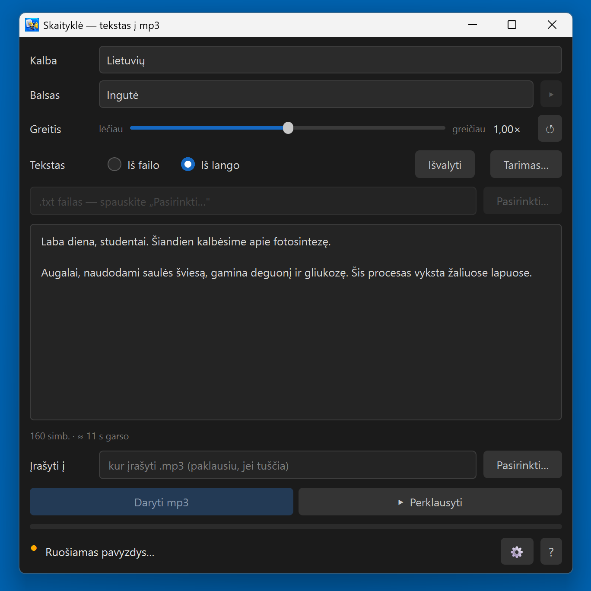
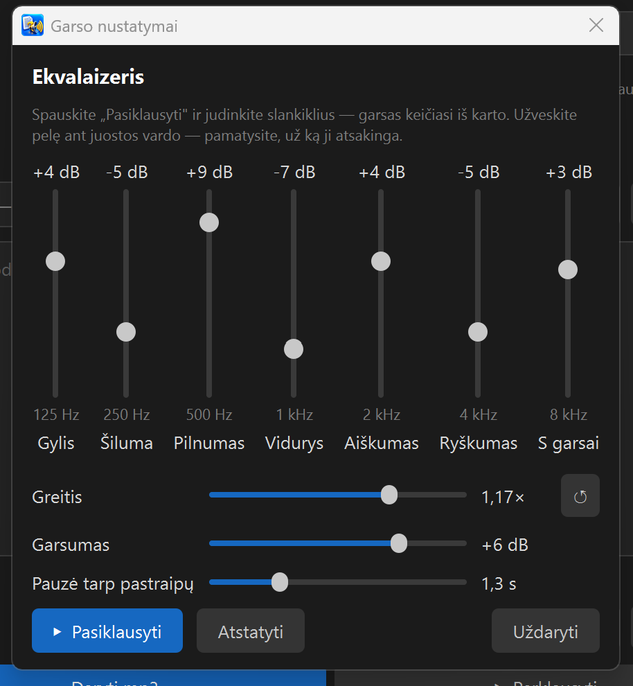
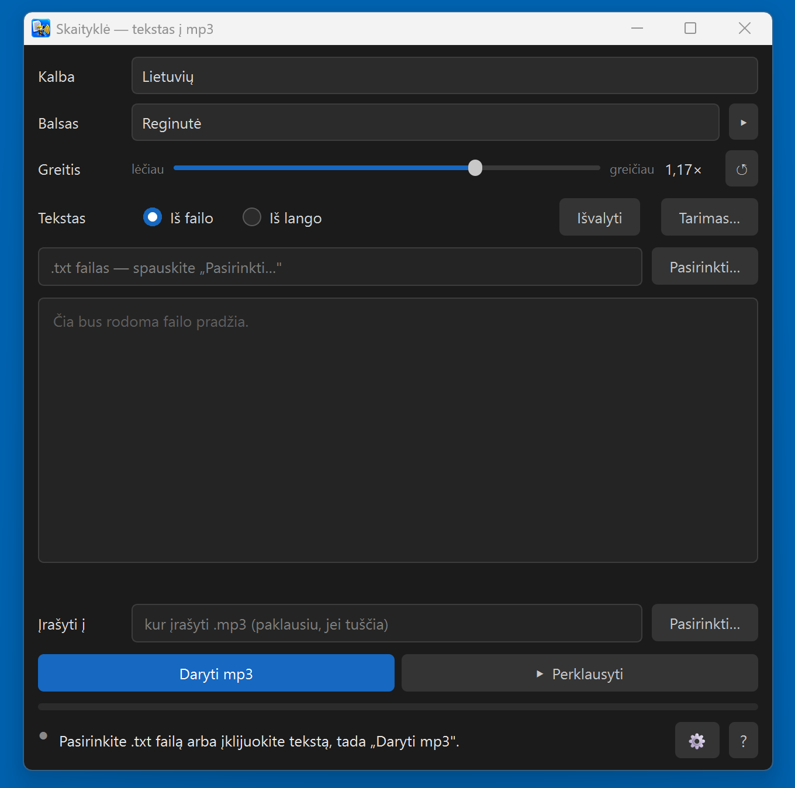
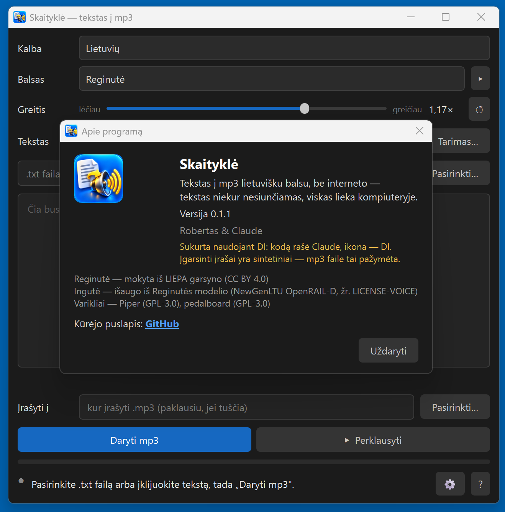

Skaityklė
Tekstas į mp3 lietuvišku balsu.
Įklijuok tekstą arba atidaryk .txt failą — gauk mp3. Tavo kompiuteryje, nemokamai, be interneto.
In English: README_EN.md
Sukurta naudojant DI: programos kodą rašė Claude (Anthropic) kartu su Robertu, ikona sukurta DI. Įgarsinti įrašai yra sintetiniai — mp3 faile tai pažymėta žyma.
Kam tai
Dėstytojams ir mokytojams
Įgarsinti skaidrių komentarus. Eilutė --- tekste padalija įrašą į kelis mp3: po failą kiekvienai skaidrei.
Visai knygai
Atidaryk .txt failą — programa parodys, kiek maždaug truks įrašas ir darbas, ir įgarsins visą. 100 puslapių paprastai — kelios minutės darbo.
Kam patogiau klausyti
Straipsnis, laiškas, užrašai — į mp3 ir į ausines: kelionėje, virtuvėje, pasivaikščiojant.
Ką moka
Du lietuviški balsai
Ingutė ir Reginutė, abu iš oficialaus Piper balsų katalogo. Šalia ▸ — pasiklausyti prieš darant.
Greičio slankiklis
Lėčiau ar greičiau — kaip tau patogu. ↺ grąžina balso numatytąjį tempą.
Iš failo arba iš lango
.txt failas (tinka ir senas Windows kodavimas) arba įklijuotas ar įrašytas tekstas.
Tarimo žodynėlis
„Kaip parašyta → kaip turi skambėti“ — terminams ir pavardėms, su perklausa.
Ekvalaizeris ⚙
Septynios juostos nuo žemų iki aukštų, garsumas ir pauzė tarp pastraipų sekundėmis. Judini klausydamasis — garsas keičiasi iš karto. Ten pat ir greitis.
Pažymėk ir ▸
Pažymėk teksto gabalą ir spausk ▸ — išgirsi tik jį. Skaičiai ir santrumpos paverčiami žodžiais.
Kaip atrodo




Kaip naudotis
- Pasirink balsą ir, jei reikia, greitį.
- Iš failo — „Pasirinkti…“ ir .txt failas; Iš lango — įklijuok tekstą.
- „Daryti mp3“ — failas atsiranda šalia teksto failo (arba kur nurodysi).
- „Perklausyti“ — nepatiko? Pakeisk greitį, balsą ar garsą ir daryk iš naujo.
Parsisiųsti: Skaitykle-0.1.1-setup.exe — apie 190 MB, Windows 10/11 (64 bitų). Diegiasi į tavo profilį, administratoriaus teisių nereikia. Balsai jau viduje — nieko papildomai siųstis nereikia.
Windows parodys mėlyną langą „Windows protected your PC“ / „Windows apsaugojo jūsų kompiuterį“. Tai ne virusas — programa neturi mokamo kodo parašo, todėl SmartScreen nepažįsta leidėjo. Spausk „Daugiau informacijos“ → „Vis tiek vykdyti“. Failo sha256 suma yra Release puslapyje šalia failo.
Privatumas — tiesiai
Tekstas ir garsas iš kompiuterio neišeina: balsai sukasi tavo kompiuteryje, internetas reikalingas tik parsisiųsti programą. Vienintelis mygtukas, vedantis į internetą, — „Klauskite DI“: jis paklausia, ar tikrai, ir tik tada atidaro naršyklėje claude.ai su programos prisistatymu. Tavo teksto ten nėra.
Balsai
- Reginutė — mokyta iš LIEPA garsyno, licencija CC BY 4.0.
- Ingutė — išaugo iš Reginutės modelio, mūsų Python įrankiais. Licencija NewGenLTU OpenRAIL-D: naudoti galima laisvai ir nemokamai, komercinio naudojimo nedraudžia; perduodant toliau reikia kartu perduoti LICENSE-VOICE ir nurodyti kilmę.
Abu balsai paskelbti oficialiame Piper balsų kataloge; programoje — tie patys failai, paleidžiama ji pasitikrina tai pagal kontrolines sumas.
Ribos
- Datos skaitomos kaip paprasti skaičiai („2026 m.“ — „du tūkstančiai dvidešimt šeši m.“), „mlrd.“ ir „°C“ neplečiami. Jei svarbu — parašyk žodžiais arba įrašyk į tarimo žodynėlį.
- Kol kas skaito tik .txt ir įklijuotą tekstą (iš Word, PDF ar PowerPoint tekstą galima nukopijuoti į langą).
- Tik lietuvių kalba, tik moteriški balsai; tik Windows.
- Tai sintetinis balsas — natūralus, bet ne žmogus.
Nesiseka? Paklauskit dirbtinio intelekto
Ne programuotojas? Programoje spausk „?“ → „Neradote atsakymo? Klauskite DI“ — atsidarys pokalbis su asistentu, kuris jau bus gavęs autoriaus instruktažą apie šią programą. Klausk savo žodžiais, lietuviškai.
Arba įklijuok į bet kurį DI pokalbį: Perskaityk https://raw.githubusercontent.com/RobertasTa/skaitykle/main/AI_CONSULTANT_BRIEF.md ir padėk man su Skaitykle.
Kita mūsų dovana — Diktuoklė

Diktuoklė — lietuviškas diktavimas balsu
Skaityklė tekstą paverčia balsu, Diktuoklė — atvirkščiai: laikai Ctrl, kalbi lietuviškai, ir tekstas atsiranda bet kurioje programoje — Word, naršyklėje, laiške. Irgi be interneto ir nemokamai.
Ačiū
Piper ir Michaelui Hansenui — už variklį ir balsų katalogą; LIEPA garsyno kūrėjams; Spotify — už pedalboard (ekvalaizeris ir mp3 skaitymas); espeak-ng, Qt / PyQt6, ONNX Runtime, libsndfile ir LAME kūrėjams.
Skaityklė yra burna, Diktuoklė — ausys. Klausimai ir pastebėjimai — Issues.